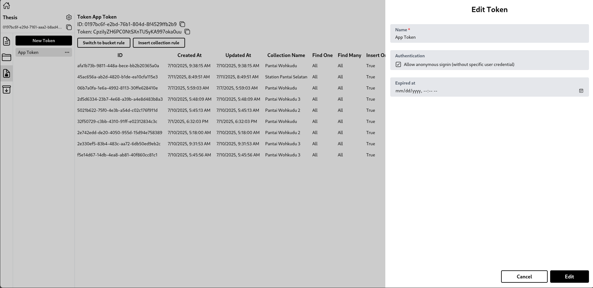

Panduan Setup Dashboard Miniweather Station
Panduan ini akan membimbing Anda dalam menyiapkan tiga layanan utama: Backend API, Dashboard Publik, dan Panel Admin.
1. Prasyarat
- Pastikan Docker dan Docker Compose telah terinstal.
- Node.js dan npm opsional (jika tidak menggunakan Docker).
- Akses ke proyek Hyperbase dan token yang dibutuhkan.
2. Setup Proyek di Hyperbase
Sebelum menjalankan layanan, Anda perlu menyiapkan token di Hyperbase:
- Masuk ke halaman Hyperbase.
- Buka proyek anda

- Buat atau edit Token App. 
- Aktifkan opsi Allow anonymous signin seperti pada gambar yang tersedia.
- Pastikan token tersebut memiliki akses ke koleksi yang diperlukan (Find One, Find Many, Insert).
Data yang diperlukan:
- Project ID:
0197bc6f-e29d-7161-aaa2-b8ad42e5a69a - Host URL:
http://localhost:8080 - Token ID:
0197bc6f-e2bd-76b1-804d-8f4529ffb2b9 - Bucket ID:
0197bc70-ffc8-7a82-b854-947577abd29e - Auth Token:
eyJ0eXAiOiJKV1QiLCJhbGciOiJIUzI1NiJ9...
3. Clone Repositori
Kloning ketiga repositori berikut:
# Backend API
git clone https://github.com/Miniweather-Station-Dashboard/miniweather-backend-service-node.git
# Dashboard Publik
git clone https://github.com/Miniweather-Station-Dashboard/miniweather-frontend-service-node.git
# Panel Admin
git clone https://github.com/Miniweather-Station-Dashboard/miniweather-adminpage-service-node.git
4. File Environment
üì¶ Backend API - .env
NODE_ENV=dev
HYPERBASE_PROJECT_ID=0197bc6f-e29d-7161-aaa2-b8ad42e5a69a
HYPERBASE_HOST=http://localhost:8080
HYPERBASE_TOKEN_ID=0197bc6f-e2bd-76b1-804d-8f4529ffb2b9
HYPERBASE_BUCKET_ID=0197bc70-ffc8-7a82-b854-947577abd29e
HYPERBASE_AUTH_TOKEN=eyJ0eXAiOiJKV1QiLCJhbGciOiJIUzI1NiJ9...
MQTT_BROKER_URL=mqtt://localhost:1883
MQTT_TOPIC=backend/miniweather
MQTT_HYPERBASE_TOPIC=hyperbase/dev
DB_USER=myuser
DB_PASSWORD=mypassword
DB_HOST=localhost
DB_PORT=5435
DB_NAME=hyperbase
SCYLLA_CONTACT_POINTS=localhost
SCYLLA_LOCAL_DC=datacenter1
SCYLLA_KEYSPACE=hyperbase
SCYLLA_USERNAME=cassandra
SCYLLA_PASSWORD=cassandra
SCYLLA_PORT=9042
DB_TYPE=scylla
JWT_SECRET=ts4S9QrNzyqcGEdnkCahVKuglhHbh27t
JWT_REFRESH_SECRET=yC5cTGXWDC0A3S7UFfE5C7PFCCtxyyFb
JWT_EXPIRATION=10s
JWT_REFRESH_EXPIRATION=1d
GMAIL_USER=user@gmail.com
GMAIL_PASS=apppassword
REDIS_HOST=localhost
REDIS_PORT=6379
REDIS_DB=0
# Jika Redis memiliki autentikasi
# REDIS_USERNAME=default
# REDIS_PASSWORD=passwordanda
SWAGGER_SERVER_URL=http://localhost:3001
Catatan: Untuk mendapatkan kredensial Gmail (
GMAIL_USERdanGMAIL_PASS), Anda perlu:
- Masuk ke akun Gmail Anda.
- Buka halaman Google App Passwords (Anda harus mengaktifkan verifikasi 2 langkah terlebih dahulu).
- Pilih jenis aplikasi "Mail" dan perangkat "Other (Custom name)", lalu beri nama seperti "Miniweather".
- Google akan memberikan App Password berupa 16 karakter yang digunakan sebagai
GMAIL_PASS.GMAIL_USERadalah alamat email Gmail Anda.
üåê Dashboard Publik - .env
NEXT_PUBLIC_API_BASE_URL=http://localhost:3001
üõ†Ô∏è Panel Admin - .env
NEXT_PUBLIC_API_BASE_URL=http://localhost:3001
4.5. Menjalankan Redis Secara Lokal
Sebelum menjalankan layanan backend, pastikan Redis berjalan. Jika Anda menggunakan Docker:
docker run -d \
--name redis-miniweather \
-p 6379:6379 \
redis:7-alpine
Redis akan berjalan di latar belakang pada port default 6379. Anda bisa mengecek statusnya dengan docker ps.
5. Menjalankan Layanan dengan Docker
Pastikan semua service memiliki Dockerfile. Jika belum memiliki docker-compose.yml, Anda bisa menjalankannya manual:
# Backend
cd miniweather-backend-service-node
docker build -t miniweather-backend .
docker run -p 3001:3001 --env-file .env miniweather-backend
# Dashboard Publik
cd ../miniweather-frontend-service-node
docker build -t miniweather-dashboard .
docker run -p 3000:3000 --env-file .env miniweather-dashboard
# Panel Admin
cd ../miniweather-adminpage-service-node
docker build -t miniweather-admin .
docker run -p 3002:3000 --env-file .env miniweather-admin
6. Catatan Tambahan
- Pastikan Hyperbase dapat diakses di
http://localhost:8080 - Redis dan MQTT juga harus berjalan pada port default (
6379dan1883) - Anda bisa menggunakan Docker Compose untuk menjalankan seluruh stack sekaligus jika diinginkan
7. Akses Aplikasi
- Panel Admin:
http://localhost:3002 - Dashboard Publik:
http://localhost:3000 - API Swagger:
http://localhost:3001/docs(jika tersedia)
Selamat mencoba dan semoga lancar!